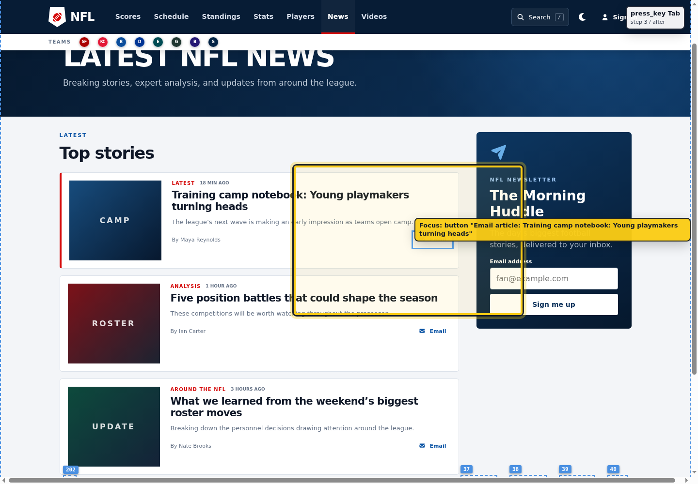
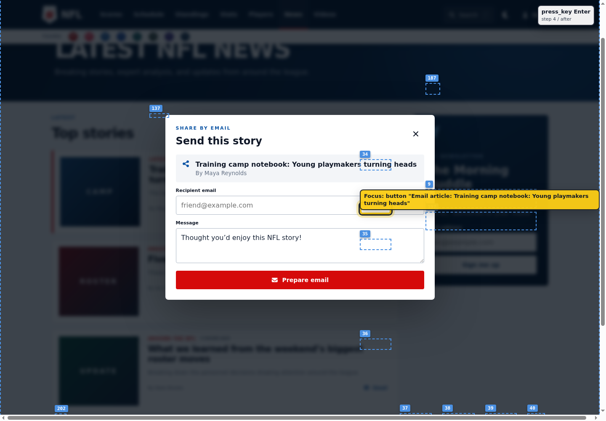
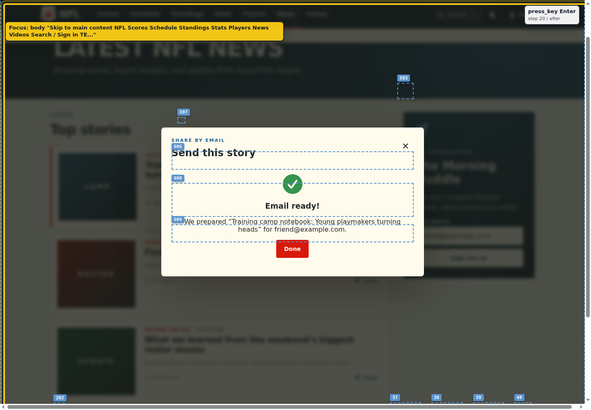
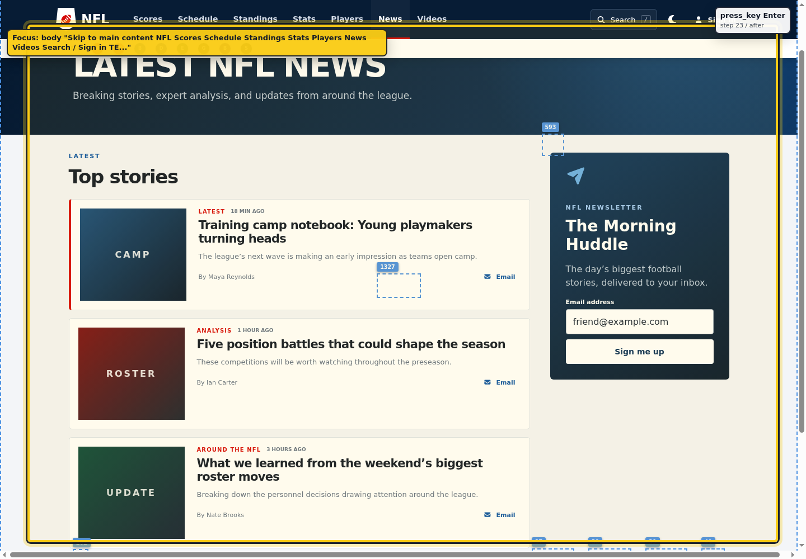

State 1
Invoker focused
Email button is the dialog invoker.
A keyboard-only agent finished the task and reported success, but the temporal trace shows that the dialog did not preserve focus context.
G(open_email_dialog(i,d) → F_[0,500ms] focus_inside(d))
G(close_completed_dialog(d,i) → F_[0,500ms] focus_returns_to_context(i))

Email button is the dialog invoker.

Focus remains outside the modal.

Focus falls to document/body.

Focus does not return to the invoker context.